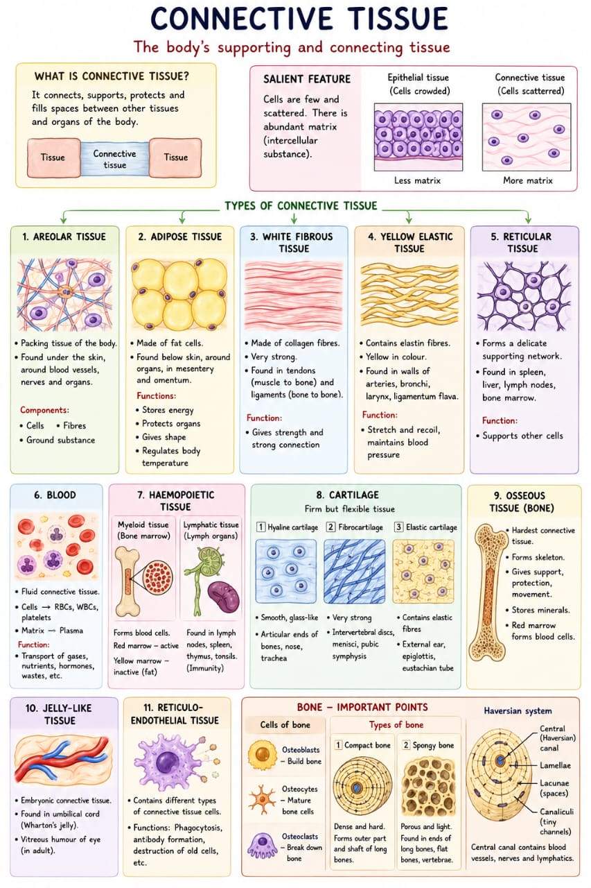
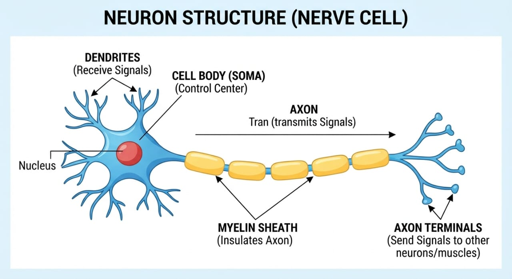

Four Basic Types
Cells rarely work alone. Group similar cells together by structure, function, and origin, and you get a tissue — the level between "cell" and "organ."
DefTissue
A group of cells similar in structure, function, and origin (genesis).
Tissues combine to form organs; organs combine to form the organ systems covered elsewhere in this subject (digestive, muscular, and so on).
The human body has exactly four basic tissue types, and every organ is some combination of them: epithelial (covers and lines), connective (binds and supports), muscular (contracts), and nervous (conducts signals). This topic covers all four at the level Section A of the exam actually asks for; Muscular Tissue is covered here only briefly, since it has its own full topic elsewhere in T3.
Epithelial Tissue
Every surface of the body — outside and in — is epithelium of one kind or another.
Epithelial tissue covers external surfaces (skin) and lines internal ones (gut, blood vessels, glands). Cells sit close together, cemented by a mucoprotein "glue," resting on a base layer (the lamina propria). Its four jobs: protection, absorption, secretion, excretion.
| Type | Location | Function |
|---|---|---|
| Squamous (pavement) | Alveoli, serous membranes, nephron, heart lining | Dialysis, passage of liquids, protection |
| Cuboidal | Thyroid, salivary glands, kidney tubules | Protection, secretion, storage |
| Columnar | Stomach, intestines, gland ducts | Absorption, secretion (goblet cells → mucus) |
| Ciliated columnar/cuboidal | Trachea, fallopian tube, CNS | Ciliary movement, CSF circulation |
| Glandular | Salivary, sebaceous, mammary glands | Formation & secretion of substances |
Compound (multi-layer) epithelium
| Type | Feature | Location |
|---|---|---|
| Transitional | 4 layers, stretchable | Kidney pelvis, ureter, bladder, urethra |
| Stratified squamous, cornified | Keratinised (horny) | Skin, hair, nails, teeth enamel |
| Stratified squamous, non-cornified | Not keratinised | Cornea, mouth, pharynx, oesophagus, vagina, cervix |
| Stratified columnar | Several columnar layers | Conjunctiva, pharynx, epiglottis |
| Stratified columnar, ciliated | Ciliated columnar layers | Larynx, soft palate |
No specific asana link is stated in your notes for epithelial tissue on its own — it's structural groundwork for the organ systems (digestive, respiratory) where the practice connections are actually drawn.
Connective Tissue
The opposite design principle from epithelium: few cells, and an abundant matrix between them.

Connective tissue's whole job is binding — holding other tissues and organs together, supporting them, packing the spaces between them. Where epithelium is packed with cells, connective tissue is the reverse: cells are few and scattered, and most of the volume is matrix, the material between the cells. How much matrix, and what kind, is what gives each of the eleven types its very different character — from soft packing tissue all the way to bone, the hardest connective tissue of all.
| Type | Feature / location |
|---|---|
| Areolar | Packing/supporting tissue — subcutaneous, subserous, submucous layers |
| Adipose | Fat storage — below skin, mesentery, omentum; shape, energy, thermoregulation |
| White fibrous | Non-branching collagen bundles — tendons & ligaments |
| Yellow elastic | Elastin fibres — ligamentum nuchae/flava, bronchi, larynx, arterial walls |
| Reticular | Fine fibrous network, forms basement membrane — spleen, liver, lymph nodes, bone marrow |
| Blood | Fluid connective tissue |
| Haemopoietic (myeloid) | Bone marrow — blood-forming + phagocytic |
| Cartilage | Hyaline / fibrocartilage / elastic — see below |
| Osseous (bone) | Hardest connective tissue — forms the skeleton (see Skeletal System topic) |
Cartilage — three types
| Type | Feature | Location |
|---|---|---|
| Hyaline | Clear, homogeneous matrix | Articular ends of bones |
| Fibrocartilage | High tensile strength, resists shear | Intervertebral discs, menisci, pubic symphysis |
| Elastic | Yellow, elastic fibres | External ear, epiglottis, eustachian tube |
Muscular Tissue
Covered in full depth in its own topic — this is the Section-A-level summary.
Muscular tissue has the property of contractility (on excitation) plus conductivity. It splits into three types by striation, control, and distribution — skeletal (striated, voluntary, attached to bone), cardiac (striated, involuntary, heart wall only), and visceral/smooth (non-striated, involuntary, walls of internal organs). The contractile filaments are myosin (thick) and actin (thin), organised into myofibrils.
See the full topic
Structure, the sliding filament mechanism, tone, fatigue, biomechanics, and the yoga/exercise-physiology connections all live in the dedicated Muscular System topic — this section exists only so Tissues covers all four basic types in one place.
Nervous Tissue
Excitable tissue built to receive and transmit signals — the neuron is its structural and functional unit.

Nervous tissue is made of two components: neurons (the actual signal-carrying cells) and neuroglia (support cells that hold everything together and insulate it). Every neuron has a cell body (soma) plus two kinds of processes reaching out from it: dendrites, which carry impulses toward the cell body, and a single axon, which carries the impulse away from it — often toward another neuron or a muscle fibre.
Excitable tissue specialised to receive and transmit impulses; composed of neurons and neuroglia, of ectodermal origin.
Neuron = cell body (soma, with neuroplasm/Nissl bodies) + dendrites (toward the cell body) + one axon (away from it, with axoplasm).
Grey matter (cell bodies) processes; white matter (fibres) conducts; neuroglia supports and insulates.
Axon coverings & nerve coverings
- Myelin sheath — insulation, present in white matter, absent in grey matter
- Nodes of Ranvier — gaps in the myelin sheath
- Neurolemma — covers peripheral nerve fibres
- Whole-nerve wrapping (parallel to muscle's epi/peri/endomysium): endoneurium (each fibre) · perineurium (fibre bundles) · epineurium (whole nerve trunk)
Your notes don't draw a specific asana link for nervous tissue itself — it underlies concepts covered with their yoga connections elsewhere (the stretch reflex and neuromuscular junction in the Muscular System topic, and breathing regulation in the Respiratory System topic).
Source: Tissues — Quick Notes (PDF) and Connective Tissue — Easy Notes (PDF).